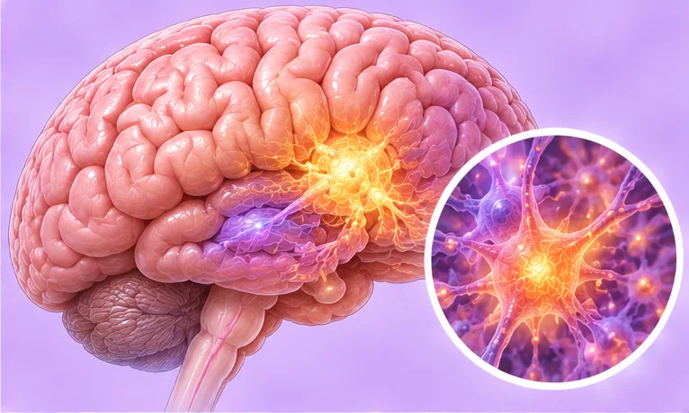

Mendengar suara (halusinasi pendengaran)
Mendengar suara atau bunyi yang tidak didengar orang lain
Apa itu
Seseorang mendengar suara atau bunyi yang terasa nyata, tetapi orang lain tidak mendengarnya. Puncanya banyak, daripada kurang tidur dan tekanan hingga penyakit, jadi sebaiknya diperiksa doktor.
- Kepala dan pendengaran
- Banyak kemungkinan punca
- Suara tidak didengar orang lain
- Jumpa doktor
- Doktor keluarga, kemudian pakar psikiatri; pakar otak atau telinga jika perlu
- Biasa pada
- Semua umur; lebih mudah jika kurang tidur, tertekan, berduka atau sakit
- Berjangkit
- Tidak
- Perjalanan
- Bergantung pada punca; doktor boleh mencarinya dan menerangkan apa yang mungkin membantu
Tanda biasa

Bimbang dan gelisahKebimbangan
Tanda-tanda lain
- Mendengar suara, bisikan atau bunyi apabila tiada sesiapa di situ
- Suara mungkin bercakap dengan anda, bercakap tentang anda atau memanggil nama anda
- Ia boleh lembut, neutral atau menakutkan, perlahan atau kuat
- Sukar tidur, bekerja atau bergaul dengan orang
Mengapa ia berlaku

Kurang tidurKekurangan tidur
Punca lain
- Masalah kesihatan mental, seperti skizofrenia, kemurungan teruk atau gangguan bipolar
- Penggunaan alkohol atau dadah, atau berhenti secara tiba-tiba
- Penyakit fizikal: demam panas, jangkitan, epilepsi, kecederaan kepala, demensia, atau sesetengah ubat
- Seketika semasa hendak tidur atau baru bangun, yang boleh berlaku pada orang sihat
Jumpa doktor dahulu jika
- Fikiran mencederakan diri atau orang lain, atau suara menyuruh berbuat demikian: hubungi 999 atau ke hospital segera
- Keliru tiba-tiba, sangat takut, atau suara bersama demam panas, sawan atau kecederaan kepala: ke hospital segera
- Suara yang baharu, bertambah kuat atau sukar diabaikan
- Rasa orang sedang memerhati atau merancang sesuatu terhadap anda
- Tidak dapat tidur atau makan, atau tidak dapat menjaga diri sendiri
Jika mana-mana berkenaan, sila jumpa doktor sebelum sesi.
Halaman ini ialah maklumat am. Sila terus mengambil ubat biasa anda dan terus berjumpa doktor.
Teruskan mengambil ubat biasa anda dan terus berjumpa doktor. Sesi kami ialah sokongan lembut dan tidak menggantikan rawatan perubatan.
Menjaga diri

Tidur yang cukupTabiat tidur yang baik 
Cari cara untuk bertenangPengurusan tekanan
Lebih banyak cara menjaga diri
- Jumpa doktor untuk mencari puncanya; anda tidak perlu menghadapinya sendirian
- Beritahu ahli keluarga atau rakan yang anda percayai apa yang anda dengar
- Jika anda mengambil ubat, jangan berhenti sendiri; tanya doktor atau ahli farmasi
Beritahu ahli terapi anda
- Kehamilan
- Epilepsi atau sawan
- Perentak jantung atau implan logam
Ahli terapi anda akan menyemaknya bersama anda sebelum bermula.
Soalan dan jawapan
Apakah Mendengar suara (halusinasi pendengaran)?
Mendengar suara atau bunyi yang tidak didengar orang lain. Seseorang mendengar suara atau bunyi yang terasa nyata, tetapi orang lain tidak mendengarnya. Puncanya banyak, daripada kurang tidur dan tekanan hingga penyakit, jadi sebaiknya diperiksa doktor.
Apakah tanda biasa Mendengar suara (halusinasi pendengaran)?
Bimbang dan gelisah
Mengapa Mendengar suara (halusinasi pendengaran) berlaku?
Kurang tidur
Bagaimana menjaga diri dengan Mendengar suara (halusinasi pendengaran)?
Tidur yang cukup · Cari cara untuk bertenang
Bolehkah sesi AI Body Master membantu Mendengar suara (halusinasi pendengaran)?
Sesi ialah sokongan meridian tanpa jarum yang lembut untuk kesejahteraan anda. Ia tidak merawat atau menyembuhkan Mendengar suara (halusinasi pendengaran) dan tidak menggantikan ubat atau doktor anda. Beritahu ahli terapi anda sebelum sesi bermula.
Keadaan berkaitan
Rujukan: General information based on public health sources such as Mayo Clinic, NHS, Cleveland Clinic and NCBI StatPearls.
Halaman dikemas kini: 2026-11-01